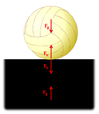

Newton's Third Law states "For any action, there is an equal and
opposite reaction." By "action" Newton meant a force, so for every force
one body exerts on another body, that second body exerts a force of
equal magnitude but opposite direction back on the first body. Since all
forces are exerted by bodies (either directly or indirectly), all forces
come in pairs, one acting on each of the bodies interacting.
The gravitational pull of the earth and moon represent a
Newton's Third Law pair. The earth exerts a gravitational pull on
the moon, and the moon exerts an equal and opposite pull on the
earth.
Though there may be two equal and opposite forces acting on a single
body, it is important to remember that each of the forces a Third Law
pair acts on a separate body. This can sometimes be confusing when there
are multiple Third Law pairs at work. Below are some examples of
situations where multiple Third Law pairs occur.

This volleyball resting on a surface has two pairs
of Third Law forces. The first consists of the gravitational
forces (one force on the ball and one force on the ground). The second
consists of the normal forces at the point of contact (one force on
the ball and one force on the ground).
If we ignore the weight of the two objects, this clamp
will also have two pairs of Third Law forces. The first will be a
set of normal forces at the top point of contact (one force on the
wood and one force on the clamp) and the second will be another set
of normal forces at the
bottom point of contact (one force on the wood and one force on the
clamp)